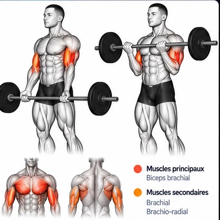
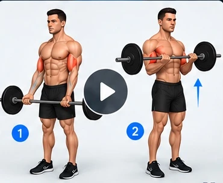

Cet aperçu valide d'abord les écrans de la maquette. Le module complet sera intégré après validation visuelle.
Curl à la barre
Biceps • Barre

Biceps brachialBrachial, brachio-radial
Description
Le curl à la barre est un exercice de base pour développer les biceps. Il sollicite principalement le biceps brachial, ainsi que le brachial et le brachio-radial.

0:00 / 0:08 · Aperçu des positions, pas encore une animation
Points clés du bon geste
✓Dos droit et gainé, épaules basses
✓Coudes proches du corps
✓Monter la barre en contractant les biceps
✓Contrôler la descente sans à-coups
✓Éviter tout balancement du buste
Conseils techniques
✓Garde les poignets dans l'axe des avant-bras.
✓Évite de projeter les coudes vers l'avant.
✓Choisis une charge permettant un mouvement contrôlé.